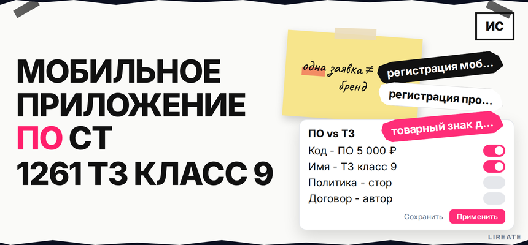
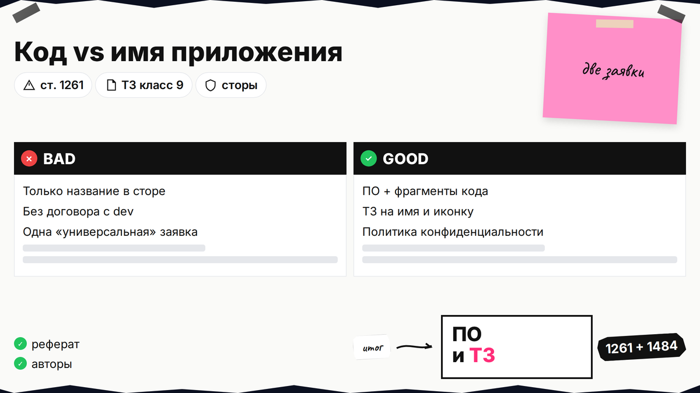
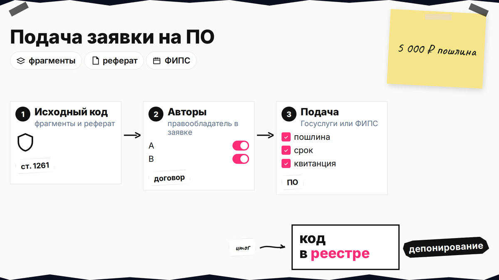
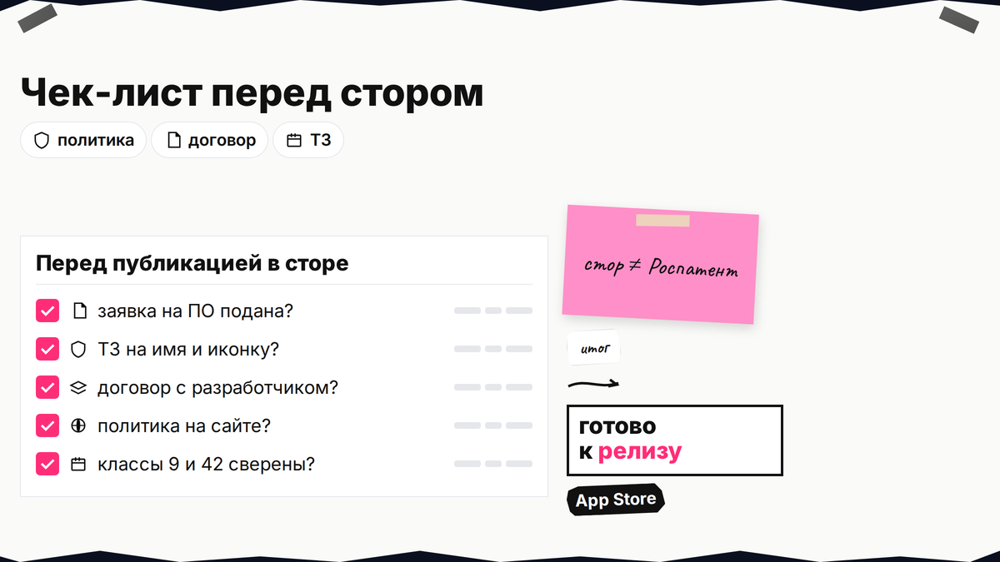

Вы выпустили мобильное приложение, а конкурент копирует код или выводит в стор похожее имя с вашей иконкой - и непонятно, куда бежать: в Роспатент как "программу для ЭВМ" или как "товарный знак". Это разные инструменты: одна заявка не закрывает и код, и бренд на витрине. Ниже вы сравните охрану ПО и ТЗ, соберёте пакет на регистрацию программы, подготовите знак для названия и иконки, проверите договоры с разработчиками и требования App Store и Google Play.

TL;DR / Быстрый инсайт: Программа для ЭВМ (ст. 1261 ГК РФ) защищает код и логику; государственная регистрация по ст. 1262 фиксирует факты для суда, пошлина с 2025 года - 5 000 руб., срок услуги - 62 рабочих дня (Роспатент). Товарный знак защищает имя и логотип в выбранных классах МКТУ (для приложения чаще 9, иногда 42 и 35 - см. подбор классов МКТУ). Одной заявкой ПО и ТЗ не объединяют. Сторы требуют политику конфиденциальности при сборе данных, но не заменяют регистрацию в Роспатенте.
Программа для ЭВМ - это готовый текст на языке программирования, который управляет компьютером или смартфоном. Товарный знак - имя или картинка, по которым пользователь узнаёт ваш продукт на рынке. Авторское право на код возникает при создании (ст. 1259 ГК РФ), но без договоров с подрядчиками правообладатель может быть не вы. Материал на 29.10.2026 не заменяет консультацию поверенного.

Регистрация программы для ЭВМ фиксирует факты о версии софта и помогает доказывать копирование исходного текста. Товарный знак бьёт по смешению названий и иконок (ст. 1484 ГК РФ). Имя в App Store без знака в Роспатенте не даёт монополии на слово.
| Критерий | Программа для ЭВМ (ПО) | Товарный знак (ТЗ) |
|---|---|---|
| Что охраняется | Исходный текст, структура, логика приложения | Словесное имя, логотип, комбинированный знак на витрине |
| Норма ГК РФ | ст. 1261, госрегистрация - ст. 1262 | ст. 1477, 1484 |
| Типичный спор | Скопировали код, декомпилировали без права | Похожее имя или иконка в сторе, рекламе, на сайте |
| Реестр | Реестр программ для ЭВМ Роспатента | Реестр товарных знаков |
| Пошлина (базово, 2025+) | 5 000 руб. за рассмотрение заявки на ПО | Зависит от классов МКТУ и количества классов (см. тарифы Роспатента) |
| Нужно для публикации в сторе | Нет | Нет (имя в сторе не равно зарегистрированному ТЗ) |
Делайте: планировать обе линии, если приложение - ваш основной продукт. Не делайте: подавать только ПО и считать, что название в Google Play "ваше навсегда".
Итоговый вердикт: ПО - для защиты разработки; ТЗ - для защиты имени и иконки на рынке. Стартап с уникальным алгоритмом начинает с прав на код и регистрации ПО; бренд с узнаваемой иконкой параллельно ведёт заявку на ТЗ в классе 9.

Заявка на регистрацию ПО подаётся в Роспатент отдельно от заявки на товарный знак. В комплект входят заявление, реферат (до 900 знаков: назначение, функции, язык, объём) и депонируемые материалы - полный исходный текст или фрагменты, достаточные для идентификации версии (Приказ № 211).
Делайте: выгружать фрагменты без ключей API. Не делайте: депонировать чужие библиотеки как "своё" приложение без указания составного произведения в реферате.
Имя приложения в сторе и иконка - объекты товарного знака, если вы подали заявку на словесное или комбинированное обозначение. Загружаемый софт обычно попадает в класс 9 МКТУ; разработка и SaaS для третьих лиц - смотрите 42; активное продвижение бренда приложения - 35. Алгоритм перечня - в материале как определить класс МКТУ.
Перед подачей проверьте коллизии в Поисковой платформе Роспатента. Иконку оформите по договору с дизайнером, иначе при комбинированном знаке сработает п. 9 ст. 1483 ГК РФ.
Делайте: подавать заявку на ТЗ до массового PR, если имя уникальное. Не делайте: копировать системные иконки Apple/Google или чужие торговые марки в макете заявки.
Регистрация ПО возможна только у правообладателя. Если код писал фрилансер, право у автора, пока нет отчуждения или лицензии (ст. 1288, 1234 ГК РФ). В штате часто действует п. 1 ст. 1296 - проверьте трудовой договор.
Отдельно закройте права на UI, шрифты и SDK. Иконку - по гайду L11; код - договором авторского заказа или отчуждением после приёмки релиза.
Делайте: собрать папку "автор - договор - акт - репозиторий" до оплаты пошлины на ПО. Не делайте: указывать в заявлении на ПО заказчика, если в договоре с подрядчиком права не переданы.
Apple и Google требуют URL политики конфиденциальности, если приложение собирает персональные данные. Укажите в карточке ссылку на политику конфиденциальности и при формах согласия - на страницу согласия на обработку ПДн.
Роспатент для модерации стора не обязателен. Без ТЗ сложнее бороться с клоном по имени; без ПО - доказать копирование кода.
Делайте: сверить название в сторе, в заявке на ТЗ и в реферате на ПО - расхождения путают экспертизу и пользователей. Не делайте: публиковать сборку с формами регистрации без работающей политики и механизма отзыва согласия, если обрабатываете ПДн.

Схема подачи: договоры с авторами кода и дизайнером → реферат и фрагменты → заявка на ПО (5 000 руб., до 62 раб. дней) → параллельно перечень МКТУ и заявка на ТЗ → политика конфиденциальности на сайте → релиз в App Store / Google Play → мониторинг реестра и стора
Делайте: вести таблицу статусов "ПО / ТЗ / стор". Не делайте: ждать отказа в сторе, чтобы начать регистрацию в Роспатенте.
После чек-листа остаётся сопровождение: ответы Роспатента по формальным замечаниям, возражения по ТЗ, обновление политики при новых формах. Лирейт помогает с регистрацией товарного знака и подготовкой пакета на программу для ЭВМ; больше материалов по рубрике - в разделе "Программа ЭВМ". Если сомневаетесь в классах или в цепочке прав от подрядчика, сверьте документы с поверенным до оплаты пошлин.
Материал проверен: редакция Лирейт, практика регистрации ПО и товарных знаков для IT-продуктов.
Достоверность данных: ст. 1261, 1262, 1484 ГК РФ, Приказ Минэкономразвития № 211, регламент Роспатента по регистрации программ для ЭВМ и тариф пошлин с 01.01.2025 сверены с КонсультантПлюс и rospatent.gov.ru на 29.10.2026. Показы Яндекс Вордстат в среде подготовки материала не запрашивались.
Нет. Это разные госуслуги, реестры и комплекты документов. Подайте заявку на ПО с рефератом и фрагментами кода и отдельную заявку на ТЗ с перечнем по МКТУ.
По регламенту на rospatent.gov.ru срок госуслуги - 62 рабочих дня с даты приёма заявки. Заложите время на правки материалов.
Нет. Площадки проверяют соответствие правилам и политике конфиденциальности, а не наличие свидетельства на ТЗ. Знак нужен, чтобы запретить конкурентам использовать похожее имя в торговле на выбранных классах МКТУ.
ТЗ не заменяет охрану программы для ЭВМ при споре о копировании кода. Для продукта с уникальной логикой разумно иметь оба инструмента.
Чаще всего - 9 класс (программы, приложения). Если продаёте услуги через приложение или разрабатываете софт на заказ, добавьте позиции из 42 класса; при активной рекламе бренда - 35. Подробный алгоритм - в статье как определить класс МКТУ.
Нет. Допускаются фрагменты исходного текста в объёме, достаточном для идентификации версии, с нумерацией и указанием места в полном тексте. Язык должен совпадать с указанным в реферате.
Регистрация не создаёт право, но по ст. 1262 подтверждает факты для суда. Свидетельство удобно для инвесторов и досудебных претензий.